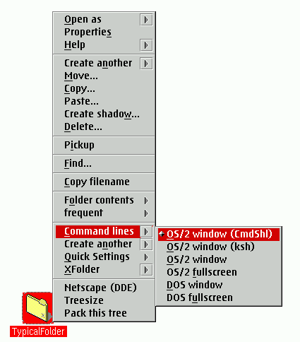

Mit der WPS-Klasse XFolder k”nnen ganz frei neue Men�eintr„ge zu den Kontextmen�s aller Ordner im System auf einmal hinzugef�gt werden.
Hier ist ein Bildschirmphoto der Standard-XFolder-Konfiguration (wie sie vom Installationsprogramm erstellt wurde):

Sie sehen das gleiche Kontextmen� bei allen Ordnern des Systems. W„hlt man nun einen Men�eintrag aus den Untermen�s aus, so wird XFolder die entsprechende Aktion f�r genau denjenigen Ordner ausf�hren, dessen Kontextmen� man ge”ffnet hat.
Wenn Sie beispielsweise "&os2;-Fenster" aus dem Untermen� "Befehlszeilen" ausw„hlen, wird ein &os2;-Fenster ge”ffnet, aber der Pfad wird auf den des Ordners ge„ndert, dessen Kontextmen� Sie ge”ffnet haben.
Detaillierte Hilfe zu den Standarderweiterungen f�r Kontextmen�s erhalten Sie, indem Sie einen der neuen Men�eintr„ge ausw„hlen und "F1" dr�cken, w„hrend die linke Maustaste noch gedr�ckt ist. Es erscheint eine Erl„uterung des gew„hlten Men�eintrages.
XFolder erlaubt es, all diese Kontextmen�eintr„ge frei zu konfigurieren. Siehe
"Kontextmen�s konfigurieren" f�r Details.